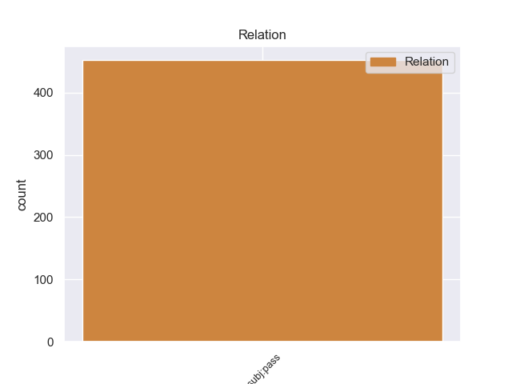
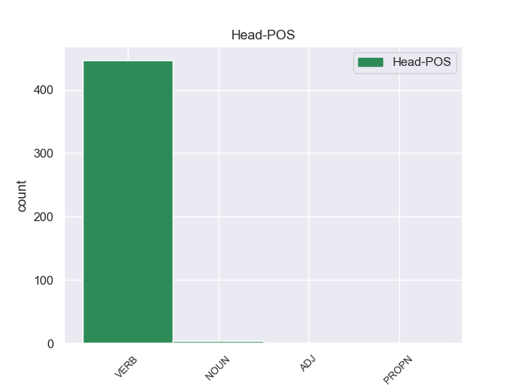
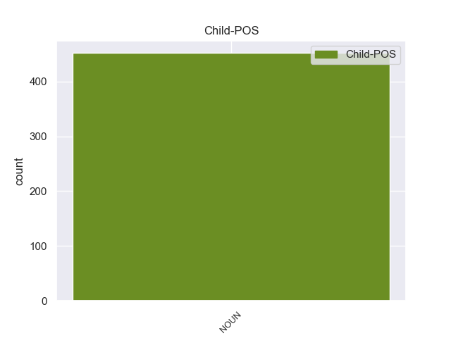

Distribution of features within this leaf



Agreement Rules sorted by frequency.
- When the dependent token is the passive nominal subject(nsubj:pass) of the head token, and the dependent token is NOUN.
1 La _ _ _ _ 0 _ _ _
2 final final NOUN _ Gender=Fem|Number=Sing 4 nsubj:pass _ _
3 fue _ _ _ _ 0 _ _ _
4 protagonizada protagonizar VERB _ Gender=Fem|Number=Sing|Tense=Past|VerbForm=Part 0 _ _ _
5 por _ _ _ _ 0 _ _ _
6 Looder _ _ _ _ 0 _ _ _
7 y _ _ _ _ 0 _ _ _
8 Lytos _ _ _ _ 0 _ _ _
9 , _ _ _ _ 0 _ _ _
10 cuyo _ _ _ _ 0 _ _ _
11 vencedor _ _ _ _ 0 _ _ _
12 fue _ _ _ _ 0 _ _ _
13 este _ _ _ _ 0 _ _ _
14 último _ _ _ _ 0 _ _ _
15 por _ _ _ _ 0 _ _ _
16 decisión _ _ _ _ 0 _ _ _
17 de _ _ _ _ 0 _ _ _
18 el _ _ _ _ 0 _ _ _
19 jurado _ _ _ _ 0 _ _ _
20 ( _ _ _ _ 0 _ _ _
21 Eklips _ _ _ _ 0 _ _ _
22 , _ _ _ _ 0 _ _ _
23 Markooz _ _ _ _ 0 _ _ _
24 y _ _ _ _ 0 _ _ _
25 Bee _ _ _ _ 0 _ _ _
26 Low _ _ _ _ 0 _ _ _
27 ) _ _ _ _ 0 _ _ _
28 . _ _ _ _ 0 _ _ _
Disagree Examples:
1 De _ _ _ _ 0 _ _ _
2 momento _ _ _ _ 0 _ _ _
3 , _ _ _ _ 0 _ _ _
4 la _ _ _ _ 0 _ _ _
5 lista lista NOUN _ Gender=Fem|Number=Sing 10 nsubj:pass _ _
6 es _ _ _ _ 0 _ _ _
7 , _ _ _ _ 0 _ _ _
8 como _ _ _ _ 0 _ _ _
9 he _ _ _ _ 0 _ _ _
10 dicho decir VERB _ Gender=Masc|Number=Sing|Tense=Past|VerbForm=Part 0 _ _ _
11 , _ _ _ _ 0 _ _ _
12 negativa _ _ _ _ 0 _ _ _
13 y _ _ _ _ 0 _ _ _
14 se _ _ _ _ 0 _ _ _
15 le _ _ _ _ 0 _ _ _
16 hacen _ _ _ _ 0 _ _ _
17 las _ _ _ _ 0 _ _ _
18 adiciones _ _ _ _ 0 _ _ _
19 procedentes _ _ _ _ 0 _ _ _
20 . _ _ _ _ 0 _ _ _
1 En _ _ _ _ 0 _ _ _
2 virtud _ _ _ _ 0 _ _ _
3 de _ _ _ _ 0 _ _ _
4 el _ _ _ _ 0 _ _ _
5 apartado _ _ _ _ 0 _ _ _
6 8 _ _ _ _ 0 _ _ _
7 de _ _ _ _ 0 _ _ _
8 el _ _ _ _ 0 _ _ _
9 artículo _ _ _ _ 0 _ _ _
10 3 _ _ _ _ 0 _ _ _
11 de _ _ _ _ 0 _ _ _
12 la _ _ _ _ 0 _ _ _
13 Directiva _ _ _ _ 0 _ _ _
14 , _ _ _ _ 0 _ _ _
15 las _ _ _ _ 0 _ _ _
16 condiciones condición NOUN _ Gender=Fem|Number=Plur 24 nsubj:pass _ _
17 de _ _ _ _ 0 _ _ _
18 trabajo _ _ _ _ 0 _ _ _
19 y _ _ _ _ 0 _ _ _
20 de _ _ _ _ 0 _ _ _
21 empleo _ _ _ _ 0 _ _ _
22 deben _ _ _ _ 0 _ _ _
23 ser _ _ _ _ 0 _ _ _
24 conformes conforme VERB _ Gender=Masc|Number=Plur|VerbForm=Fin 0 _ _ _
25 a _ _ _ _ 0 _ _ _
26 " _ _ _ _ 0 _ _ _
27 los _ _ _ _ 0 _ _ _
28 convenios _ _ _ _ 0 _ _ _
29 colectivos _ _ _ _ 0 _ _ _
30 celebrados _ _ _ _ 0 _ _ _
31 por _ _ _ _ 0 _ _ _
32 las _ _ _ _ 0 _ _ _
33 organizaciones _ _ _ _ 0 _ _ _
34 de _ _ _ _ 0 _ _ _
35 los _ _ _ _ 0 _ _ _
36 interlocutores _ _ _ _ 0 _ _ _
37 sociales _ _ _ _ 0 _ _ _
38 más _ _ _ _ 0 _ _ _
39 representativas _ _ _ _ 0 _ _ _
40 a _ _ _ _ 0 _ _ _
41 escala _ _ _ _ 0 _ _ _
42 nacional _ _ _ _ 0 _ _ _
43 y _ _ _ _ 0 _ _ _
44 que _ _ _ _ 0 _ _ _
45 sean _ _ _ _ 0 _ _ _
46 ampliamente _ _ _ _ 0 _ _ _
47 aplicados _ _ _ _ 0 _ _ _
48 en _ _ _ _ 0 _ _ _
49 el _ _ _ _ 0 _ _ _
50 conjunto _ _ _ _ 0 _ _ _
51 de _ _ _ _ 0 _ _ _
52 el _ _ _ _ 0 _ _ _
53 territorio _ _ _ _ 0 _ _ _
54 nacional _ _ _ _ 0 _ _ _
55 " _ _ _ _ 0 _ _ _
56 . _ _ _ _ 0 _ _ _
1 La _ _ _ _ 0 _ _ _
2 iniciativa _ _ _ _ 0 _ _ _
3 de _ _ _ _ 0 _ _ _
4 la _ _ _ _ 0 _ _ _
5 Comunidad _ _ _ _ 0 _ _ _
6 Europea _ _ _ _ 0 _ _ _
7 de _ _ _ _ 0 _ _ _
8 ofrecer _ _ _ _ 0 _ _ _
9 , _ _ _ _ 0 _ _ _
10 a _ _ _ _ 0 _ _ _
11 básicamente _ _ _ _ 0 _ _ _
12 todos _ _ _ _ 0 _ _ _
13 los _ _ _ _ 0 _ _ _
14 productos _ _ _ _ 0 _ _ _
15 de _ _ _ _ 0 _ _ _
16 los _ _ _ _ 0 _ _ _
17 países _ _ _ _ 0 _ _ _
18 menos _ _ _ _ 0 _ _ _
19 desarrollados _ _ _ _ 0 _ _ _
20 , _ _ _ _ 0 _ _ _
21 el _ _ _ _ 0 _ _ _
22 libre _ _ _ _ 0 _ _ _
23 acceso acceso NOUN _ Gender=Masc|Number=Sing 40 nsubj:pass _ _
24 a _ _ _ _ 0 _ _ _
25 los _ _ _ _ 0 _ _ _
26 mercados _ _ _ _ 0 _ _ _
27 de _ _ _ _ 0 _ _ _
28 los _ _ _ _ 0 _ _ _
29 países _ _ _ _ 0 _ _ _
30 industrializados _ _ _ _ 0 _ _ _
31 y _ _ _ _ 0 _ _ _
32 de _ _ _ _ 0 _ _ _
33 los _ _ _ _ 0 _ _ _
34 países _ _ _ _ 0 _ _ _
35 en _ _ _ _ 0 _ _ _
36 desarrollo _ _ _ _ 0 _ _ _
37 más _ _ _ _ 0 _ _ _
38 avanzados _ _ _ _ 0 _ _ _
39 fue _ _ _ _ 0 _ _ _
40 lanzada lanzar VERB _ Gender=Fem|Number=Sing|Tense=Past|VerbForm=Part 0 _ _ _
41 en _ _ _ _ 0 _ _ _
42 el _ _ _ _ 0 _ _ _
43 marco _ _ _ _ 0 _ _ _
44 de _ _ _ _ 0 _ _ _
45 el _ _ _ _ 0 _ _ _
46 proceso _ _ _ _ 0 _ _ _
47 que _ _ _ _ 0 _ _ _
48 condujo _ _ _ _ 0 _ _ _
49 a _ _ _ _ 0 _ _ _
50 la _ _ _ _ 0 _ _ _
51 Conferencia _ _ _ _ 0 _ _ _
52 de _ _ _ _ 0 _ _ _
53 Seattle _ _ _ _ 0 _ _ _
54 . _ _ _ _ 0 _ _ _
1 La _ _ _ _ 0 _ _ _
2 promoción _ _ _ _ 0 _ _ _
3 de _ _ _ _ 0 _ _ _
4 el _ _ _ _ 0 _ _ _
5 desarrollo _ _ _ _ 0 _ _ _
6 científico _ _ _ _ 0 _ _ _
7 , _ _ _ _ 0 _ _ _
8 la _ _ _ _ 0 _ _ _
9 promoción promoción NOUN _ Gender=Fem|Number=Sing 25 nsubj:pass _ _
10 también _ _ _ _ 0 _ _ _
11 de _ _ _ _ 0 _ _ _
12 las _ _ _ _ 0 _ _ _
13 nuevas _ _ _ _ 0 _ _ _
14 tecnologías _ _ _ _ 0 _ _ _
15 y _ _ _ _ 0 _ _ _
16 el _ _ _ _ 0 _ _ _
17 acceso _ _ _ _ 0 _ _ _
18 de _ _ _ _ 0 _ _ _
19 todos _ _ _ _ 0 _ _ _
20 a _ _ _ _ 0 _ _ _
21 esas _ _ _ _ 0 _ _ _
22 tecnologías _ _ _ _ 0 _ _ _
23 no _ _ _ _ 0 _ _ _
24 quedarán _ _ _ _ 0 _ _ _
25 garantizados garantizado VERB _ Gender=Masc|Number=Plur|VerbForm=Part 0 _ _ _
26 por _ _ _ _ 0 _ _ _
27 el _ _ _ _ 0 _ _ _
28 mercado _ _ _ _ 0 _ _ _
29 y _ _ _ _ 0 _ _ _
30 por _ _ _ _ 0 _ _ _
31 la _ _ _ _ 0 _ _ _
32 competencia _ _ _ _ 0 _ _ _
33 , _ _ _ _ 0 _ _ _
34 no _ _ _ _ 0 _ _ _
35 más _ _ _ _ 0 _ _ _
36 de _ _ _ _ 0 _ _ _
37 lo _ _ _ _ 0 _ _ _
38 que _ _ _ _ 0 _ _ _
39 el _ _ _ _ 0 _ _ _
40 mercado _ _ _ _ 0 _ _ _
41 y _ _ _ _ 0 _ _ _
42 la _ _ _ _ 0 _ _ _
43 competencia _ _ _ _ 0 _ _ _
44 asegurarán _ _ _ _ 0 _ _ _
45 la _ _ _ _ 0 _ _ _
46 proximidad _ _ _ _ 0 _ _ _
47 y _ _ _ _ 0 _ _ _
48 la _ _ _ _ 0 _ _ _
49 eficacia _ _ _ _ 0 _ _ _
50 sociales _ _ _ _ 0 _ _ _
51 de _ _ _ _ 0 _ _ _
52 los _ _ _ _ 0 _ _ _
53 grandes _ _ _ _ 0 _ _ _
54 servicios _ _ _ _ 0 _ _ _
55 colectivos _ _ _ _ 0 _ _ _
56 , _ _ _ _ 0 _ _ _
57 salud _ _ _ _ 0 _ _ _
58 , _ _ _ _ 0 _ _ _
59 educación _ _ _ _ 0 _ _ _
60 , _ _ _ _ 0 _ _ _
61 transportes _ _ _ _ 0 _ _ _
62 , _ _ _ _ 0 _ _ _
63 comunicaciones _ _ _ _ 0 _ _ _
64 , _ _ _ _ 0 _ _ _
65 agua _ _ _ _ 0 _ _ _
66 y _ _ _ _ 0 _ _ _
67 quién _ _ _ _ 0 _ _ _
68 sabe _ _ _ _ 0 _ _ _
69 cuánto _ _ _ _ 0 _ _ _
70 más _ _ _ _ 0 _ _ _
71 . _ _ _ _ 0 _ _ _
1 Los _ _ _ _ 0 _ _ _
2 contadores contador NOUN _ Gender=Masc|Number=Plur 5 nsubj:pass _ _
3 podrían _ _ _ _ 0 _ _ _
4 ser _ _ _ _ 0 _ _ _
5 vistos visto VERB _ Gender=Fem|Number=Plur|Tense=Past|VerbForm=Part 0 _ _ _
6 como _ _ _ _ 0 _ _ _
7 una _ _ _ _ 0 _ _ _
8 herramienta _ _ _ _ 0 _ _ _
9 muy _ _ _ _ 0 _ _ _
10 importante _ _ _ _ 0 _ _ _
11 en _ _ _ _ 0 _ _ _
12 la _ _ _ _ 0 _ _ _
13 gestión _ _ _ _ 0 _ _ _
14 de _ _ _ _ 0 _ _ _
15 el _ _ _ _ 0 _ _ _
16 agua _ _ _ _ 0 _ _ _
17 a _ _ _ _ 0 _ _ _
18 través _ _ _ _ 0 _ _ _
19 de _ _ _ _ 0 _ _ _
20 las _ _ _ _ 0 _ _ _
21 nuevas _ _ _ _ 0 _ _ _
22 zonas _ _ _ _ 0 _ _ _
23 de _ _ _ _ 0 _ _ _
24 cuencas _ _ _ _ 0 _ _ _
25 hidrográficas _ _ _ _ 0 _ _ _
26 para _ _ _ _ 0 _ _ _
27 contribuir _ _ _ _ 0 _ _ _
28 a _ _ _ _ 0 _ _ _
29 la _ _ _ _ 0 _ _ _
30 eliminación _ _ _ _ 0 _ _ _
31 de _ _ _ _ 0 _ _ _
32 las _ _ _ _ 0 _ _ _
33 aguas _ _ _ _ 0 _ _ _
34 residuales _ _ _ _ 0 _ _ _
35 y _ _ _ _ 0 _ _ _
36 para _ _ _ _ 0 _ _ _
37 la _ _ _ _ 0 _ _ _
38 planificación _ _ _ _ 0 _ _ _
39 adecuada _ _ _ _ 0 _ _ _
40 de _ _ _ _ 0 _ _ _
41 las _ _ _ _ 0 _ _ _
42 necesidades _ _ _ _ 0 _ _ _
43 futuras _ _ _ _ 0 _ _ _
44 . _ _ _ _ 0 _ _ _